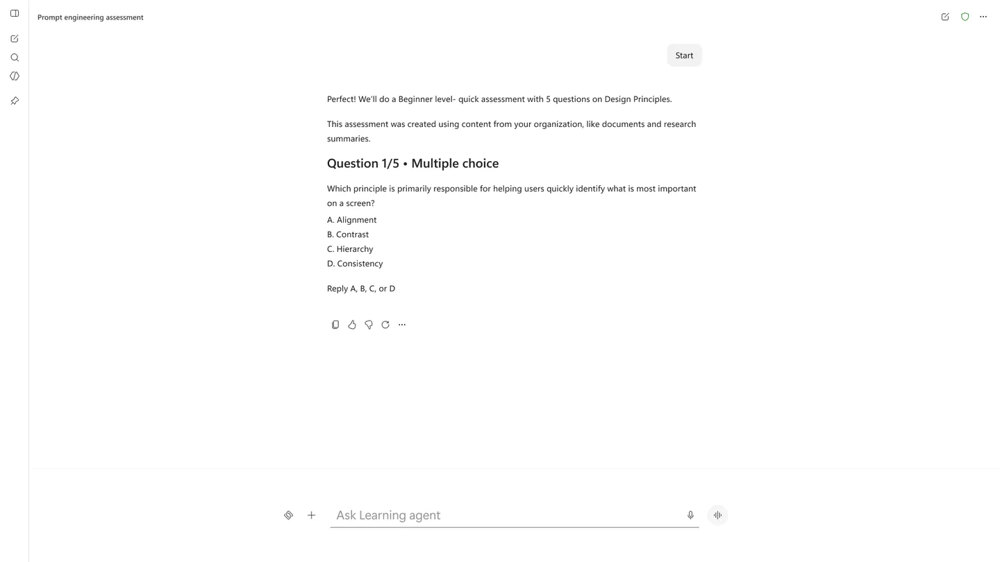

Track 1
Skill Assessments | Learning Agent
Personalised assessments in the Learning Agent that learners start themselves, based on what they want to learn. A rich, card-based preference selector was introduced so learners can tap instead of type. The idea behind it is that typing is also a currency, and every saved keystroke makes the experience easier.



Challenge
At the beginning of 2026, there was a strong push towards building AI-first products. In learning, assessments felt like a natural opportunity: AI could generate assessments dynamically instead of relying on pre-authored, one-size-fits-all experiences.
For Learning Agent, we wanted to go a step further and make assessments personal to a learner’s role, learning intent, available time and desired level of difficulty. Generating text-based assessments was relatively straightforward. The harder design problem was configuring them. Asking learners to communicate every preference through chat made a simple task unnecessarily laborious.
There was also an important enterprise requirement. For skills, compliance and organisation-specific knowledge, customers needed confidence that assessments could be grounded exclusively in their own trusted content.
My role
I helped shape the end-to-end assessment experience, particularly how learners configure and start an assessment. I advocated for moving beyond the assumption that an agentic experience always needs to be text-driven.
My focus was to find the right interaction for the job: conversational when conversation adds value, and structured UI when it is simply faster and clearer.
Process
We introduced rich preference and confirmation cards within the conversational experience. Instead of typing out instructions, learners could quickly choose the number of questions, time commitment and difficulty level.
This became an important design principle for us: the ideal agent experience isn’t necessarily all chat. It is the right combination of conversation and UI.
We also designed assessments that could be generated solely from an organisation’s approved content, giving learning administrators greater control over trust, relevance and compliance.
Outcome
Skill Assessments launched as part of Learning Agent in June and became one of its top two most-used features.
For me, its significance went beyond assessments. The project demonstrated how AI experiences can move fluidly between conversation and graphical UI, using each modality where it works best.